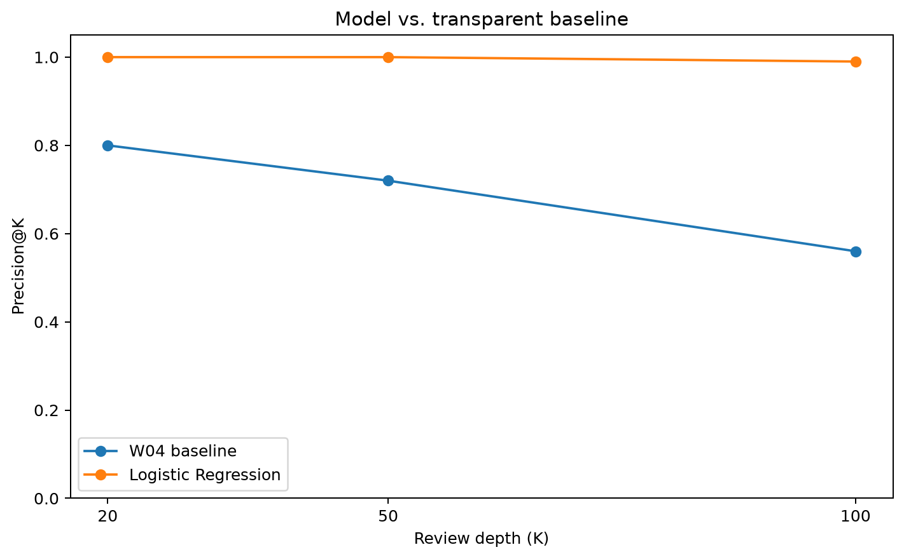
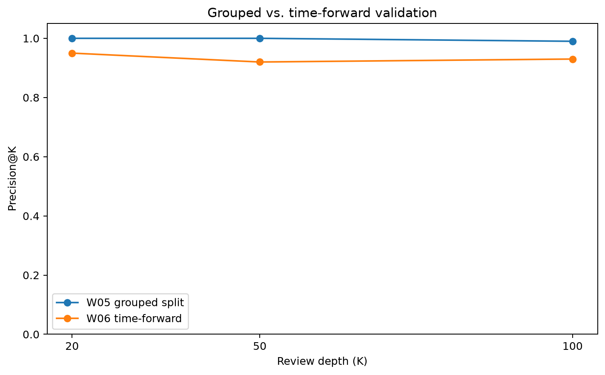
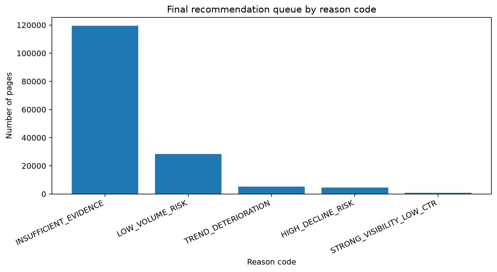

From search signals to review priorities
Content teams need practical ways to decide which pages deserve review first, but a simple CTR change does not by itself show which pages are worth prioritizing. This study evaluates whether observable search-performance signals can be used to rank content pages associated with a future CTR decline. Using FlyRank search-performance data, five March features were evaluated with a transparent rule-based baseline and an interpretable Logistic Regression model, with a stricter time-forward validation using earlier month-to-month outcomes for training and March→April for testing. On the time-forward evaluation, the model measured Precision@20 of 0.85, Precision@50 of 0.86, and Precision@100 of 0.82, compared with a CTR-decline base rate of approximately 30.75%. The resulting output is a decision-support queue with reason codes and suggested review actions, not evidence that a specific content refresh will cause a performance improvement.
Which pages deserve attention first?
Content teams can observe impressions, CTR, average position, and recent movement for many pages, but manually deciding where to spend review time does not scale well.
Research question
Can observable search-performance signals be used to rank content pages for human review when the goal is to identify pages associated with a future CTR decline?
Decision supported
Which pages should be reviewed first, and what evidence should a human consider before deciding whether to refresh, improve, or monitor a page?
What the model can know before the outcome
Source
The project uses the FlyRank ML Internship search-performance warehouse. The core modeling source is the daily content-performance data containing page-level Google Search Console signals.
Warehouse grain: one content page × one reporting day. Modeling grain: one aggregated row per content page for the relevant month.
Feature and outcome windows
Feature period: March 2026
Outcome period: April 2026
Time-forward training used: January→February and February→March.
The future test period was: March→April.
Model features
| Feature | What it represents |
|---|---|
march_impressions |
Observed March search visibility. |
march_ctr |
Observed March click-through rate. |
march_avg_position |
Observed March average search position. |
impression_trend |
Within-month change in impressions. |
ctr_trend |
Within-month change in CTR. |
Target
ctr_decline = 1 when April CTR < March CTR;
ctr_decline = 0 otherwise.
Deliberate exclusions
- GA4 engagement metrics, because coverage was sparse.
- Future months when constructing March features.
- The proxy target itself.
- Label-derived fields.
- Future optimization or decision information.
- Week-4 decision outputs such as priority score, action label, and reason code.
Pseudonymous client/content identifiers were used for joins or grouping where necessary, but not as predictive features.
Baseline first, then a learned ranking
Transparent baseline
Week 4 built a frozen rule-based priority score using three understandable signals:
Impression opportunity CTR opportunity Position opportunity
Its purpose was to provide an interpretable benchmark before introducing ML.
Learned model
Logistic Regression was selected because it is relatively simple, interpretable, appropriate for a binary outcome, and produces probability scores that can be used for ranking.
The pipeline uses median imputation, standardization, and Logistic Regression with a fixed random seed of 42.
Validation design
Week 5 used a client-grouped holdout to reduce the possibility that the model benefits from client-specific patterns already represented in training.
Week 6 introduced a stricter time-forward design:
Leakage audit
| Risk | Audit result |
|---|---|
| Target-derived features | No obvious target-derived feature was included. |
| Future-window leakage | March features precede the April outcome window. |
| Decision-derived fields | Week-4 action outputs were excluded from model inputs. |
What did the model add?
The original Week-5 client-grouped comparison showed a strong measured ranking advantage over the frozen rule baseline. The stricter time-forward test gives a more conservative view of future generalization.
Model vs. transparent baseline
| K | W04 baseline | Logistic Regression | Base rate |
|---|---|---|---|
| 20 | 0.80 | 1.00 | 0.3075 |
| 50 | 0.72 | 1.00 | 0.3075 |
| 100 | 0.56 | 0.99 | 0.3075 |

Future-period validation
| K | W05 grouped split | W06 time-forward | Base rate |
|---|---|---|---|
| 20 | 1.00 | 0.85 | 0.3075 |
| 50 | 1.00 | 0.86 | 0.3075 |
| 100 | 0.99 | 0.82 | 0.3075 |

What this work cannot claim
Proxy outcome
ctr_decline measures whether April CTR was lower than March CTR.
It is a measurable proxy for prioritization, not a direct measure of whether
refreshing a page would improve performance.
Future generalization
The grouped-split result was stronger than the time-forward result. The latter should be treated as the more conservative estimate of future-period performance.
Low-volume instability
Small impression and click counts can make CTR movement unstable. The playbook therefore routes pages with fewer than 20 March impressions toward monitoring.
No causal evidence
This is observational analysis. It does not contain a controlled intervention showing that a content change causes an improvement in CTR, rankings, traffic, or business outcomes.
Missing trend information
Some pages do not have enough usable observations to calculate both trend features. The model pipeline handles these missing values with training-set median imputation.
Human review remains necessary
Search intent, SERP features, seasonality, page context, and other factors are not fully represented by the five model features.
From score to action
The final output turns model ranking into a human-review playbook. The model supplies the order; the reason code explains why a page was surfaced; the human makes the final decision.
| Priority | Reason code | Suggested action | Reviewer focus |
|---|---|---|---|
| 1 | HIGH_DECLINE_RISK |
REVIEW_CTR_SNIPPET | Review search-result presentation, title/snippet relevance, and intent alignment. |
| 2 | TREND_DETERIORATION |
REVIEW_TREND | Check whether movement is consistent and whether seasonality or SERP changes may explain it. |
| 3 | STRONG_VISIBILITY_LOW_CTR |
REVIEW_SNIPPET | Review visible pages with relatively low CTR for possible snippet or intent mismatch. |
| 4 | LOW_VOLUME_RISK |
MONITOR_BEFORE_ACTION | Do not act immediately when the available evidence is too small to be stable. |
| 5 | INSUFFICIENT_EVIDENCE |
MONITOR | Avoid forcing an intervention without enough supporting evidence. |
Queue composition
| Reason code | Pages |
|---|---|
INSUFFICIENT_EVIDENCE |
119,559 |
LOW_VOLUME_RISK |
28,411 |
TREND_DETERIORATION |
5,339 |
HIGH_DECLINE_RISK |
4,520 |
STRONG_VISIBILITY_LOW_CTR |
720 |

The operating rule
Model ranks → reason code explains → human reviews → human decides → outcome is monitored.
Everything traces back to the notebooks
The capstone is implemented as a repeatable notebook pipeline that builds the month-to-month modeling frames, trains the Logistic Regression model, calculates future-period Precision@K, ranks pages, assigns reason codes, and generates the figures used here.
Core notebooks
Week 4 — Baseline Action Scoring
Week 5 — Capstone Modeling
Week 6 — Validation & Audit
Week 7 — Content Action Playbook
Capstone — Final Modeling & Recommendation Pipeline
Repository
Model configuration
Logistic Regression with median imputation, standardization, and
random_state=42.
The final figures shown on this page are generated by the capstone notebook and
committed under work/figures/.
Data source
Built on the FlyRank ML Internship dataset.
The project was completed as part of the FlyRank ML Internship and uses the internship search-performance warehouse for modeling and validation.
A ranking system, not an automatic editor
The project shows that a combination of observable search-performance signals can support measured prioritization of pages associated with future CTR decline. The stricter time-forward evaluation is lower than the original grouped-split result, which is why the final output is framed as decision-support.
The practical result is a ranked, reason-coded queue that helps a human decide where to look first — while preserving the limits of observational data.